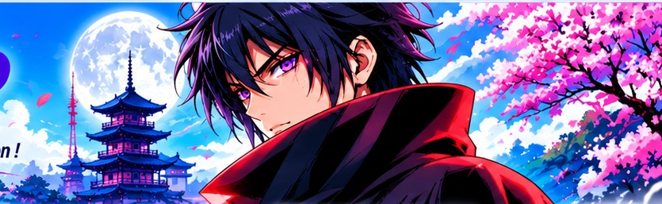

Repérez les sujets, vérifiez les faits et préparez vos prochaines publications.

MANGA · ANIME · ACTUALITÉS
De la veille à la prépublication.
Une rédaction augmentée, précise et maîtrisée. Vous décidez de chaque mot et de chaque partage.
MMSTUDIO
⌕
ARTICLES COLLECTÉS0dans le radar RSS
✎
MES BROUILLONS0sauvegardés sur cet appareil
◎
SOURCES ACTIVES0contrôlées au dernier cycle
✓
PUBLICATIONMANUELLEaucun envoi vers Facebook
VEILLE PRIORITAIRE
Alertes tendances époustouflantes
SURVEILLANCE
Alertes fondées sur les tendances fortes confirmées par plusieurs sources. Active les notifications du navigateur pour être averti lorsque le site est ouvert.
Notifications non activées
Chargement des tendances fortes…
VOTRE PARCOURS
Du sujet au brouillon, en toute simplicité
3 étapes · validation humaine
01
VEILLE MULTI-SOURCES
Radar de tendances
Explorez les actualités manga et anime classées par fraîcheur et couverture des sources.
02
RÉDACTION CONTRÔLÉE
Atelier éditorial
Préparez un texte à partir des informations de la source, puis relisez chaque détail.
03
APERÇU & VALIDATION
Vos brouillons
Modifiez, prévisualisez et exportez. Rien n’est publié automatiquement.
CENTRE DE CONTRÔLE
À reprendre
PRÊT
Chargement des données du radar…
LA RÈGLE DU STUDIO
« Vérifier la source. Respecter les faits. Garder la main. »
Notre ligne éditoriale
VEILLE MULTI-SOURCES
Radar de tendances
Classement indicatif selon la fraîcheur et le nombre de sources indépendantes.
Signaux lumineux : rouge clignotant = couverture forte confirmée · orange pulsant = plusieurs médias directs · vert fixe = à surveiller · violet pulsant = recherche publique repérée. Le catalogue AniList reste un répertoire, pas une tendance en soi. Les signaux décrivent uniquement les données réellement disponibles.
Chargement…
SIGNAUX DE RECHERCHE
Noms repérés dans les recherches publiques
Google Trends · AniList
Les recherches publiques agrégées sont rapprochées du catalogue manga/anime. Les résultats dépendent des pays et flux disponibles ; aucun clic privé n’est collecté.
Chargement des signaux publics…
MENTIONS ÉDITORIALES
Titres repérés dans les actualités RSS
Articles · médias directs
Cette liste reconnaît les titres du catalogue dans les titres des articles RSS. Elle mesure la couverture éditoriale observée, pas les recherches ni les clics des internautes.
Analyse des titres dans les articles…
CLASSEMENT DES TITRES
Mangas et animes les plus tendance du catalogue
AniList · classement tendance
Liste actualisée à chaque collecte. Les titres sont classés selon le signal de tendance fourni par AniList ; ce classement n’est pas une mesure de tous les réseaux sociaux.
Chargement du catalogue manga et anime…
CRÉATION CONTRÔLÉE
Atelier éditorial
Sélectionnez une actualité pour préparer un brouillon fidèle à sa source.
Important : le modèle est annoncé gratuit et accepte un quota anonyme de 2 requêtes par minute et par IP. La documentation ne garantit pas l’accès sans authentification depuis tous les navigateurs. Si le test échoue (authentification ou CORS), aucune clé ni carte ne sera demandée automatiquement.
VALIDATION HUMAINE
Brouillons du jour
Les brouillons restent sur cet appareil. Ils ne sont jamais publiés automatiquement.
Aucun brouillon enregistré.
RESSOURCES DU STUDIO
Médiathèque
Visuels présents dans le dépôt. Les originaux sont conservés ; cette galerie ne modifie aucun fichier.
Les images enregistrées avec tes brouillons restent disponibles sur cet appareil.
Les visuels associés à tes brouillons apparaîtront ici.
TRANSPARENCE & CONFIGURATION
Sources & réglages
Les flux sont contrôlés à chaque collecte. Google Actualités est un agrégateur : vérifiez toujours l’article du média d’origine.
✧
Assistant IA automatique · Groq
L’assistant prépare jusqu’à quatre textes en français après chaque collecte RSS, à partir des seuls titres et résumés disponibles. Modèle : GPT-OSS 120B. Les textes restent à relire et ne sont jamais publiés automatiquement. Sans résumé exploitable, la proposition reste signalée comme incomplète.
Activation : crée une clé Groq, puis ajoute-la dans GitHub → Settings → Secrets and variables → Actions sous le nom exact GROQ_API_KEY. Ne colle jamais la clé dans le site, un fichier ou un message.
 01
01 02
02 03
03.png){kind=link}